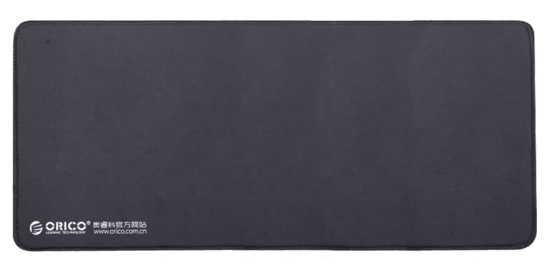

Orico Gaming Desk Mat XL

Detailed Specification
- Soft yet firm build quality
- Desk mat surface is optimized for gaming
- Rubberized base prevents the desk mat from moving
- Stitched edge prevents desk mat from fraying through prolonged use
- Washable without reducing rubber quality
- 800mm x 300mm size will fit your desk perfectly
Product Description
Orico Gaming Desk Mat is a great balance between functionality and aesthetic. The desk mat surface is specially designed to facilitate mouse sensors. The rubberized bottom will prevent the mat from moving in place. The all-black design gives a muted and elegant impression.
Price = Rp 100.000